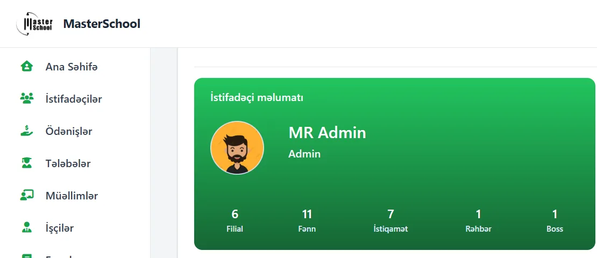

P-01 EdTech, production
MasterSchool Portal
One system for running a training centre.

A central portal with a module for each of those areas, study materials, reporting, and dashboards scoped to each role. Built on .NET 8 with Clean Architecture.
Read the case study: MasterSchool Portal Open portal (opens in a new tab)